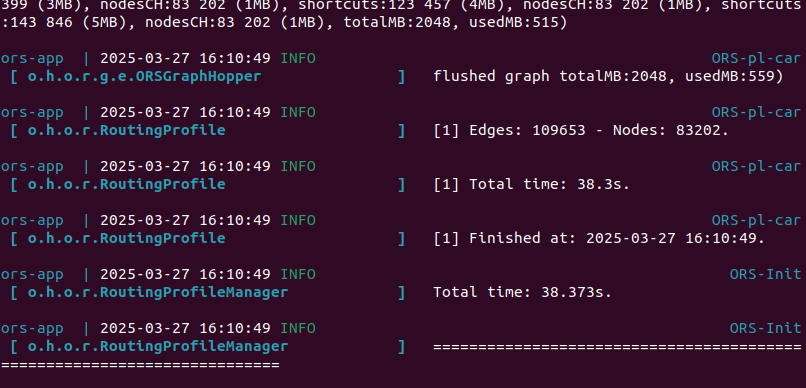
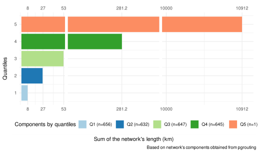

3 Transform into graph
3.1 Run ORS
Having obtained the OpenStreetMap (OSM) road network of the AOI, we run the docker for OpenRouteService (OSM) 1,which transforms the OSM geometry into a routable graph.
Firstly, in the ors-config.yml from OpenRotueService (ORS), the “source file” parameter located in the line 102 is set to find the directory containing the OSM road network. In this case, we set the directory to /home/ors/files/porto_alegre_urban_center.osm.pbf. Secondly, before running the docker, we added the file “porto_alegre_urban_center.osm.pbf” obtained in the lane obtain routable network to the directory files inside the docker.
The last step is to run the ORS docker using th following command [ORN-1] docker compose up in the terminal where the file docker-compose.yml is located. Do not close this window or run the docker with the parameter -d.
OpenRouteService (ORS) created a routable network with costs and adding information for each node such as the origin, “fromId”, and the destination, “toId”. We named ors_raw_network to the table containing this network made up of 109653 edges and 83202 nodes.

3.2 Export from ORS to R
The R script “get_graph” from Marcel Reinmuth exported the ORS network to R. This script contains the function get_graph() that allowed us to transfer the data from the ORS docker to the R enviroment. The parameters used were no_cores to 4, which depends on your CPU ; aoi and aoi_bbox to select and mask related to the AoI ; profile to ‘driving-car’. It is possible to adjust these parameters to the user case. Finally, we exported this R object as ors_raw_network.shp.
[ORN-2] Importing ORS network to R
# Import data from PostgreSQL into R
library(sf)
library(DBI)
sampling_area <- sf::st_read(postgresql_connection,
DBI::Id(
schema="agile_gis_2025_rs",
"core_metropolitan_area"))
# Load Marcel's script
source('/home/ricardors/agile-gscience-2024-rs-flood/code/paper/get_graph.R')
### Obtaining the bounding box and area of interest
sampling_area_aoi <- sampling_area %>% st_as_sfc()
sampling_area_bbox <- sf::st_bbox(sampling_area)
### Exporting the openrouteservice graph into R
exported_graph <- get_graph(port=8080,
aoi_bbox=sampling_area |> sf::st_bbox(),
aoi=sampling_area_aoi,
profile='driving-car',
no_cores=4)
### Storing the data
sf_data <- exported_graph[[1]]
net <- exported_graph[[2]]
### Exporting the data into a shp file
sf_data %>% sf::st_write("ors_raw_network.shp")
# time: 626039 msThis shapefile can be exported to PostgreSQL|QGIS. The data in the PostgreSQL database is automatically available in QGIS using the DB Manager plugin2. since we connected it with each other already. Bear in mind that is required to refresh the connection when new data is imported to the server.
troubleshooting 5 When uploading the shapefile to the PostgreSQL database, the program frozen on occassions. We solved this by using ogr2ogr, R or QGIS instead of shp2pgsql.
4 Obtain pre-disaster network
We used pgrouting [Pgrouting: https://docs.pgrouting.org/latest/en/pgr dijkstra.html] to use the algorith Dijkstra for the centrality and redundancy analysis. The first part of the query [ORN-4] cast the variables toId, fromId and id to bigint as the documentation from pgrouting indicated. The function pgr_createverticestable created the pgrouting routable network generating the auxiliar table ors_raw_network_vertices_pgr.
[ORN-3] Editing ORS network to be routable for pgrouting
--- Cast variables
ALTER TABLE ors_raw_network
ALTER COLUMN "toId" type bigint,
ALTER COLUMN "fromId" type bigint,
ALTER COLUMN "id" type bigint;
--- Creating pgrouting network
EXPLAIN ANALYZE
SELECT pgr_createverticesTable('ors_raw_network',
the_geom:='geom',
source:='fromId',
target:='toId');
--- Execution time: 10580.669 msThe following information shows the first 5 observations from the main table ors_raw_network.
| id | toId | fromId | weight | undrctI | bdrctId | geom |
|---|---|---|---|---|---|---|
| 1 | 12 | 51251 | 5.78788 | 1 | NA | LINESTRING (-51.20032 -29.9... |
| 2 | 21 | 1080 | 20.11769 | 2 | NA | LINESTRING (-51.17958 -29.8... |
| 3 | 34 | 54110 | 3.84732 | 3 | 1 | LINESTRING (-51.1594 -30.05... |
| 4 | 34 | 1643 | 12.40056 | 4 | NA | LINESTRING (-51.16067 -30.0... |
| 5 | 35 | 31443 | 9.12000 | 5 | NA | LINESTRING (-51.16293 -30.0... |
The following table shows the first 5 observations from the auxiliary table ors_raw_network_vertices_pgr created and required by pgrouting to calculate routes.
| id | cnt | chk | ein | eout | the_geom |
|---|---|---|---|---|---|
| 2 | NA | NA | NA | NA | POINT (-51.27921 -29.99426) |
| 3 | NA | NA | NA | NA | POINT (-51.26199 -29.98899) |
| 4 | NA | NA | NA | NA | POINT (-51.25277 -29.98616) |
| 5 | NA | NA | NA | NA | POINT (-51.24314 -29.98648) |
| 6 | NA | NA | NA | NA | POINT (-51.24083 -29.98724) |
troubleshooting 6: Depending on the method and parameters to import the data, the columns name may be slightly different. For example, ogr_id instead of id or toId instead of toid. To solve this, it is possible to specifically name the geometry column using ogr2ogr with the paremeter GEOMETRY_NAME=geom. Alternatively, rename the column once uploaded in the database.
4.1 Select one routable network
We explored the number of components of the raw ORS network using the function pgr_strongComponents()3. The reason was that a routable network is considered as one-self connected connected component without disconnected parts or islands (Lu et al. 2018). We selected the component based on its length from a quantitative point of view and checking its location with a qualitative inspection.
4.1.1 Components length
We analysed the distribution of the length on each of the networks component. The classification of the components is based on the quantiles as follows:
- Q1: Components of the network with a length less than the first quartile with a value of 0.027 km. The sum of all these 656 components is 8 km.
- Q2: Components of the network with a length between 0.027 km and 0.057 km. When these 632 networks are added, the total length is 27 km.
- Q3: Components of the network with a length range from 0.057 km to 0.114 km. Adding the length of these 647 components returned a total length of 53 km.
- Q4: 645 Components with a length between 0.114 km and 10911 km having a total length of 281.2 km.
- Q5: We named “Q5” to the 1 component with a length higher than 10911 km. The total length is 10912 km.
[ORN-4] The table aoi_net_componets classified all the components of the network for inspection
CREATE TABLE aoi_net_components AS
--- Classify the network by their components
WITH ghs_aoi_net_component AS (
SELECT
*
FROM
pgr_strongComponents('SELECT
id,
"fromId" AS source,
"toId" AS target,
weight AS cost
FROM
ors_raw_network')),
--- Calculate the total length of each component
ghs_aoi_net_component_geom AS (
SELECT
net.*,
net_geom.geom
FROM
ghs_aoi_net_component AS net
JOIN
ors_raw_network AS net_geom
ON
net.node = net_geom."fromId"),
all_component_net AS (
SELECT
component,
st_union(geom) AS the_geom,
st_length(st_union(geom)::geography)::int AS length --- meters
FROM
ghs_aoi_net_component_geom
GROUP BY component
ORDER BY length DESC)
SELECT * FROM all_component_net;
---time: 4238.637 ms
How to create the bar plot for a quantitative inspection
library(ggplot2)
# optional
component_analysis_network$quantile <- ecdf(component_analysis_network$length)(component_analysis_network$length)
component_analysis_network$length_km <- component_analysis_network$length/1000
component_analysis_network$quantile_cat <-
cut(component_analysis_network$length_km,
breaks= c(0,.027,.057,.114,10911,10911918), label=FALSE)
# quantiles and largest network
## original plot
p1 <- ggplot(component_analysis_network, aes(length_km,
quantile,
color=factor(quantile_cat))) +
geom_point()
## ggbreak plot without legend
library(ggbreak)
library(patchwork)
library(dplyr)
df_geom <-na.omit(component_analysis_network) %>%
group_by(quantile_cat) %>%
summarise(
quantile_length= sum(length_km)
)
df <- na.omit(component_analysis_network) %>%
sf::st_drop_geometry() %>%
group_by(quantile_cat) %>%
summarise(
quantile_length= sum(length_km)
)
library(forcats)
ggplot(df, aes(x=quantile_cat, y=quantile_length), scale=4) +
geom_col(aes(fill=factor(quantile_cat))) +
scale_y_continuous(breaks=c(8,27,53)) +
expand_limits(y=11000) +
scale_y_break(c(282,10000), scale=2 , ticklabels = c(10000,10912)) +
scale_y_break(c(52,280), scale=2,ticklabels=c(52,281.2)) +
labs(
fill= "Components by quantiles",
x="Quantiles",
y="Sum of the network's length (km)",
caption ="Based on network's components obtained from pgrouting"
) +
scale_fill_manual(values= c("#a6cee3", "#1f78b4", "#b2df8a", "#33a02c", "#fc8d62"),labels=c("Q1 (n=656)",
"Q2 (n=632)",
"Q3 (n=647)",
"Q4 (n=645) ",
"Q5 (n=1)")) +
coord_flip() +
theme_minimal() +
theme(legend.position = "bottom")From a quantitative point of view, we selected the 1 component Q5 (orange) because it represented the 96% of the total road network discarding the rest 2580 components that only summed up a 4%.
4.1.2 Components locations
From a qualitative point of view, we carried out a visual inspection to better understand the high number of components or self-connected networks.
How to create a map for qualitative inspection
### Tidy component to be used as categorical variable
library(forcats)
component_analysis_network$component <- component_analysis_network$component |> as.character() |> as_factor()
## Visualization
library(mapview)
library(leafpop)
m1_net <- df_geom |>
dplyr::filter(quantile_cat=="1") |>
mapview(layer.name = "1st quantile",
lwd= 3,
color="#66c2a5",
popup= popupTable( rename(df_geom[1,],
Quantile="quantile_cat",
Total_length_km = "quantile_length"),
zcol=(c("Quantile","Total_length_km"))))
m2_net <- df_geom |>
dplyr::filter(quantile_cat=="2") |>
mapview(layer.name = "2nd quantile",
lwd= 3,
color="#1f78b4",
popup= popupTable( rename(df_geom[2,],
Quantile="quantile_cat",
Total_length_km = "quantile_length"),
zcol=(c("Quantile","Total_length_km"))))
m3_net <- df_geom |>
dplyr::filter(quantile_cat=="3") |>
mapview(layer.name = "3rd quantile",
lwd= 3,
color="#b2df8a",
popup= popupTable( rename(df_geom[3,],
Quantile="quantile_cat",
Total_length_km = "quantile_length"),
zcol=(c("Quantile","Total_length_km"))))
m4_net <- df_geom |>
dplyr::filter(quantile_cat=="4") |>
mapview(layer.name = "4th quantile",
lwd= 3,
color="#33a02c",
popup= popupTable( rename(df_geom[4,],
Quantile="quantile_cat",
Total_length_km = "quantile_length"),
zcol=(c("Quantile","Total_length_km"))))
m5_net <- df_geom |>
dplyr::filter(quantile_cat=="5") |>
mapview(layer.name = "5th quantile",
lwd= 0.5,
color="#fc8d62",
popup= popupTable( rename(df_geom[5,],
Quantile="quantile_cat",
Total_length_km = "quantile_length"),
zcol=(c("Quantile","Total_length_km"))))
m1_net + m2_net + m3_net+ m4_net+m5_netWe observed that the relatively small size of some objects appeared next to OSM objects categorized as “barriers”, meaning that they were part of private properties. This is the case for the Villa’s Home Resort. This qualitative inspection supported our decision to discard these areas as we did not consider it relatively important for an emergency response for this use case.
4.2 Network for Core Metropolotian centrality
The query [ORN-5] analysed again the totaly of the ors_raw_network but limiting the results to 1 ordered by its length in descending order. Using the field “fromid” and “node” allowed to create the pre-disaster network named as ghs_aoi_net_largest, which will be used to calculate the Core Metropolitan conectivity.
[ORN-5] How to select the component Q5
CREATE TABLE ghs_aoi_net_largest AS
--- Same as classifying the components in previous step
WITH ghs_aoi_net_component AS (
SELECT
*
FROM
pgr_strongComponents('SELECT
id,
"fromId" AS source,
"toId" AS target,
weight AS cost
FROM
ors_raw_network')),
--- Similar as obtaining the length, although in this case the largest component of the network is selected
ghs_aoi_net_component_geom AS (
SELECT
net.*,
net_geom.geom
FROM
ghs_aoi_net_component AS net
JOIN
ors_raw_network AS net_geom
ON
net.node = net_geom."fromId"),
largest_component_net AS (
SELECT
component,
st_union(geom) AS the_geom,
st_length(st_union(geom)::geography)::int AS length
FROM
ghs_aoi_net_component_geom
GROUP BY component
ORDER BY length DESC
LIMIT 1),
net_largest_component_network_ghs_aoi AS (
SELECT
*
FROM
ghs_aoi_net_component,
largest_component_net
WHERE
ghs_aoi_net_component.component = largest_component_net.component)
SELECT
net_multi_component.*
FROM
ors_raw_network AS net_multi_component,
net_largest_component_network_ghs_aoi AS net_largest_component
WHERE
net_multi_component."fromId" IN (net_largest_component.node);
---time: 6799.939 ms4.3 Network for Intracity connectivity
We created tables in the “public” schema lowering the case of columns. There were several reasons. Firsly to reduce the number of tables in the schema “agile_gis_2025_rs” for better understanding. Secondly, we used the library glue (Hester and Bryan 2024), so we preferred to lower the case of the fields to parse SQL queries with ease. Similarly, the difficulty of parsing SQL queries is reported for the python module sql_alchemy 4. We used a query[https://www.postgresonline.com/article_pfriendly/141.html] to create the statements to alter the columns’ table.
Creating a copy of the network in public schema
--- First, copy the tables from the schema agile_gis_2025_rs to public
CREATE TABLE ghs_aoi_net_largest AS
SELECT
*
FROM
agile_gis_2025_rs.ghs_aoi_net_largest;
CREATE TABLE municipalities_ghs AS
SELECT
*
FROM
agile_gis_2025_rs.municipalities_ghs;
--- Second, alter the tables in teh public schema lowering the case of columns
SELECT 'ALTER TABLE ' || quote_ident(c.table_schema) || '.'
|| quote_ident(c.table_name) || ' RENAME "' || c.column_name || '" TO ' || quote_ident(lower(c.column_name)) || ';' As ddlsql
FROM information_schema.columns As c
WHERE c.table_schema NOT IN('agile_gis_2025_rs')
AND c.column_name <> lower(c.column_name)
ORDER BY c.table_schema, c.table_name, c.column_name;
---- After removing extra "", we obtained the queries to alter the required columns:
ALTER TABLE public.ghs_aoi_net_largest RENAME "bdrctId" TO bdrctid;
ALTER TABLE public.ghs_aoi_net_largest RENAME "fromId" TO fromid;
ALTER TABLE public.ghs_aoi_net_largest RENAME "toId" TO toid;
ALTER TABLE public.ghs_aoi_net_largest RENAME "undrctI" TO undrcti;
ALTER TABLE public.ghs_aoi_net_largest_post RENAME "bdrctId" TO bdrctid;
ALTER TABLE public.ghs_aoi_net_largest_post RENAME "fromId" TO fromid;
ALTER TABLE public.ghs_aoi_net_largest_post RENAME "toId" TO toid;
ALTER TABLE public.ghs_aoi_net_largest_post RENAME "undrctI" TO undrcti;The code chunk [ORN-6] created a table for each of the municipalities using a loop. In each iteration it intersected the pre-disaster network named ghs_aoi_net_largest to each municipality, cast the variables for pgrouting, analysed the components and created a routable network for pgrouting . The result were 9 main tables (e.g. net_1) with the road network and 9 pgrouting auxiliary tables (e.g. net_1_vertices_pgr). On this occasion, we specify the names of the fields for pgr_dijkstra(). For example, the field “fromId” obtained using ORS is renamed as “source” for pgrouting.
[ORN-6] How to create a network for each municipality
library(glue)
library(tictoc)
table_rq_1_2_net <- glue_sql("CREATE TABLE table_rq_1_2_net
(id integer,
fromId integer,
toid integer,
weight float,
undrcti integer,
bdrctid integer,
wkb_geometry geometry,
shapename varchar(250))", .con =connection)
table_end_db <- dbGetQuery(conn=connection,table_rq_1_2_net )
for (idx in 1:length(municipalities_ghs$ogc_fid)) {
tic(glue("run {idx}/{length(municipalities_ghs$ogc_fid)}"))
muncipality_id <- municipalities_ghs$ogc_fid[idx]
table_name_1 <- glue("net_{idx}")
table_name_2 <- glue("net_largest_{idx}")
dbExecute(glue_sql("DROP TABLE IF EXISTS {`table_name_1`}", .con=connection),
conn=connection)
# Assuming you have an open PostgreSQL connection in con
dbExecute(glue_sql("DROP TABLE IF EXISTS {`table_name_1`}", .con=connection),
conn=connection)
query_1 <- glue_sql("CREATE TABLE {`table_name_1`} AS
SELECT
net.*,
nuts.shapename
FROM
(SELECT
*
FROM
municipalities_ghs
WHERE
ogc_fid = {muncipality_id} ) AS nuts,
ghs_aoi_net_largest AS net
WHERE
st_intersects(nuts.wkb_geometry, net.geom)", .con = connection)
# Send the query
result_q1 <- dbGetQuery(conn= connection, query_1)
# Alter the table
query_2 <- glue_sql("ALTER TABLE {`table_name_1`}
ALTER COLUMN toid type bigint,
ALTER COLUMN fromid type bigint,
ALTER COLUMN id type bigint", .con = connection)
result_q2 <- dbGetQuery(conn= connection, query_2)
dbExecute(glue_sql("DROP TABLE IF EXISTS {`table_name_2`}", .con=connection),
conn=connection)
query_3 <- glue_sql("CREATE TABLE {`table_name_2`} AS ---here table
WITH ghs_aoi_net_component AS (
SELECT
*
FROM
pgr_strongComponents('SELECT
id AS id,
fromid AS source,
toid AS target,
weight AS cost
FROM
{`table_name_1`}')),
--- Calculate the largest component from the network
ghs_aoi_net_component_geom AS (
SELECT
net.*,
net_geom.geom
FROM
ghs_aoi_net_component AS net
JOIN
{`table_name_1`} AS net_geom -----
ON
net.node = net_geom.fromid),
largest_component_net as (SELECT
component,
st_union(geom) AS the_geom,
st_length(st_union(geom)::geography)::int AS length
FROM
ghs_aoi_net_component_geom
GROUP BY component
ORDER BY length DESC
LIMIT 1),
--- Using the largest component from the network to filter
largeset_component_network_ghs_aoi AS (
SELECT
*,
largest_component_net.component,
largest_component_net.length
FROM
ghs_aoi_net_component,
largest_component_net
WHERE
ghs_aoi_net_component.component = largest_component_net.component)
SELECT
net_multi_component.*
FROM
{`table_name_1`} AS net_multi_component,
largeset_component_network_ghs_aoi AS net_largest_component
WHERE
net_multi_component.fromid IN (net_largest_component.node)", .con = connection)
result_q3 <- dbGetQuery(conn= connection, query_3)
query_4 <- glue("
SELECT pgr_createverticestable('{`table_name_2`}',
the_geom:='geom',
source:='fromid',
target:='toid');", .con = connection )
result_q4 <- dbGetQuery(conn= connection, query_4)
insert_query <- glue_sql("INSERT INTO table_rq_1_2_net (id, fromid, toid, weight, undrcti, bdrctid, wkb_geometry, shapename)
SELECT id, fromid, toid, weight, undrcti, bdrctid, geom, shapename
FROM {`table_name_2`}", .con = connection)
dbExecute(conn = connection, insert_query)
toc()
}
# time: 15077 mstroubleshooting 7 When the pgr_dijkstra is not found, we copied the tables to the public schema and run again the code.
| id | fromid | toid | weight | undrcti | bdrctid | shapename | wkb_geometry |
|---|---|---|---|---|---|---|---|
| 76591 | 43075 | 43080 | 40.36560 | 86816 | 22385 | Alvorada | LINESTRING (-51.04401 -29.9... |
| 25770 | 43080 | 43075 | 40.36560 | 29291 | 22385 | Alvorada | LINESTRING (-51.04239 -29.9... |
| 128883 | 43086 | 44985 | 9.15864 | 145809 | 84972 | Alvorada | LINESTRING (-51.04344 -29.9... |
| 127596 | 44985 | 43086 | 9.15864 | 144473 | 84972 | Alvorada | LINESTRING (-51.04307 -29.9... |
| 141573 | 42912 | 67210 | 13.75560 | 159974 | NA | Alvorada | LINESTRING (-51.0436 -29.99... |
https://giscience.github.io/openrouteservice/run-instance/running-with-docker↩︎
QGIS-DB Manger: https://docs.qgis.org/3.40/en/docs/user_manual/plugins/core_plugins/plugins_db_manager.html↩︎
Pgrouting-Components: https://docs.pgrouting.org/dev/en/pgr strongComponents.html↩︎
https://stackoverflow.com/questions/68638554/change-all-column-names-to-lowercase-postgresql↩︎